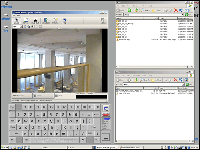
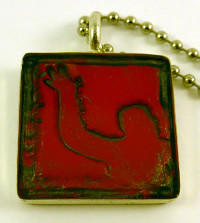
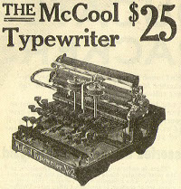

Links to live pages
To view live pages, click the image associated with that page below.
Git and Github
A page I created about the history and common uses of Git and Github.
LICP Classroom Video recording User Guide
A guide documenting an interface I made.
Handmade Custom Jewelry
I created this site for Stephanie Ponder, local jewelry maker.
Pop Culture
These are some old, old, old pieces I wrote for a webzine (remember those?) back in New York.
Music
This is a link to the music I host on Soundcloud. Why is it here? Filler, man. Filler.